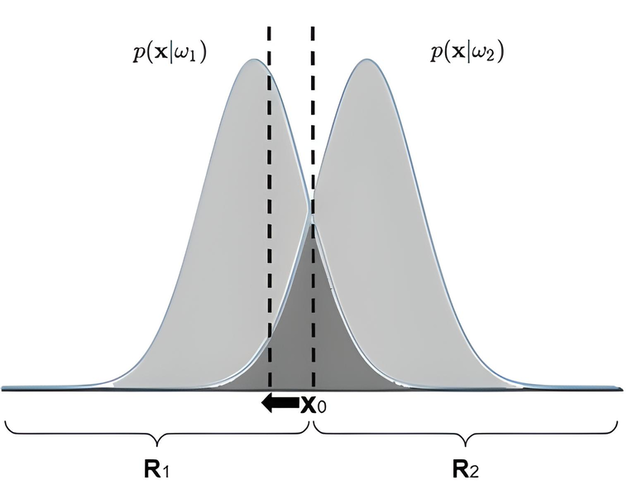

Capítulo 1: Teoria da decisão de Bayes#
A Teoria de Decisão de Bayes é uma abordagem estatística que busca realizar a tomada de deciões em situações incerteza, sendo capaz de atualizar as probabilidade de acordo com a obtenção de novas informações. A Inferência Estatística [1] Bayesiana lida com os parâmetros como variáveis aleatórias, integrando informações anteriores (\(\textit{a priori}\)) e dados novos, gerando distribuições \(\textit{a posteriori}\) que refinam as crenças iniciais sobre os parâmetros, realizando uma atualização contínua
A Regra de Bayes, demonstrada na equação 1, é uma equação que relaciona a ocorrência de dois eventos através de suas probabilidades condicionais. Sendo utilizada para calcular a probabilidade de um evento ocorrer, dado que outro evento já ocorreu.
\(\begin{equation} P(A|B) = \frac{\text{P(B|A)P(A)}}{\text{P(B)}}\ \tag{2.1} \end{equation}\)
Onde:
P(A|B) é a probabilidade do evento A ocorrer dado que o evento B já ocorreu, ou seja, é a probabilidade \(\textit{a posteriori}\) de A;
P(B|A) é a probabilidade do evento B ocorrer dado que o evento A já ocorreu, ou seja, é a probabilidade \(\textit{a posteriori}\) de B;
P(A) é a probabilidade do evento A ocorrer independentemente do evento B, ou seja, é a probabilidade \(\textit{a priori}\) de A;
P(B) é a probabilidade do evento B ocorrer independentemente do evento A, ou seja, é a probabilidade \(\textit{a priori}\) de B;
Como ponto de partida, admite-se que os padrões são expressos de forma genérica por \(x = [x_{1},...x_{n}]^T\), sobre os quais deseja-se inferir sua pertinência em uma dada classe em \(Ω = \){\(ω_{1},...,ω_{c}\)}. No contexto estatístico, a seguinte regra geral pode ser empregada para tal processo de classificação:
\(\begin{equation} (\textbf{x},ω_{j}) \leftrightarrow arg_{ω_{j}\inΩ} max P(ω_{j}|\textbf{x}) \tag{2.2} \end{equation}\)
em que \(P(ω_{j}|\textbf{x})\), denominada probabilidade \(\textit{a posteriori}\), representa a probabilidade de \(\textbf{x}\) pertencer a \(ω_{j}\).
De modo geral, em um problema de classificação, a probabilidade \(\textit{a posteriori}\) que compõe a regra expressa pela a equação anterior é desconhecida. No entanto, a Regra de Bayes possibilita o seu cálculo por meio da probabilidade \(\textit{a priori}\) \(P(ω_{j})\), da evidência \(p(\textbf{x})\) e da função de verossimilhança \(p(\textbf{x}|ω_{j})\):
\(\begin{equation} P(ω_{j}|\textbf{x}) = \frac{p(\textbf{x}|ω_{j})P(ω_{j})}{p(\textbf{x})} \tag{2.3} \end{equation}\)
sendo \(p(x) = \sum_{j=1}^{c} p(\textbf{x}|ω_{j})P(ω_{j})\).
Uma vez conhecida \(P(ω_{j}|\textbf{x})\), a classificação de \(\textbf{x}\) segundo \(ω_{j}\), com \(j=1,...,c\), torna-se um problema simples. Com o objetivo de aprofundar as discussões introduzidas, vamos realizar uma análise sobre o erro cometido ao utilizar a Regra de Bayes no processo de classificação. A fim de favorecer o entendimento, considere um problema de classificação entre apenas duas classes \(ω_{1}\) e \(ω_{2}\) equiprováveis, cujas observações estão definidas sobre o conjunto dos números reais (i.e., \(\textbf{X} ≡ \mathbb{R}\)), o qual é dividido entre as regiões \(R_{1}\) e \(R_{2}\). Enquanto a região \(R_{1}\) compreende os valores \(\textbf{x}\) tais que \(P(ω_{1}|\textbf{x})>P(ω_{2}|\textbf{x})\). A Figura 2.1 ilustra a relação entre as regiões e as probabilidades mencionadas.

Segundo essas considerações, de acordo com a equação 2.4, é possível expressar a probabilidade do erro de classificação na quantificação da probabilidade do padrão \(\textbf{x}\) pertencer à região \(R_{2}\), apesar da sua classe original ser \(ω_{1}\).
\(\begin{equation} P_{erro} = P(\textbf{x} ∈ R_{2},ω_{1}) + P(\textbf{x} ∈ R_{1},ω_{2}) \tag{2.4} \end{equation}\)
A partir da equação 2.4 é possível demonstrar que o erro se torna mínimo ao garantir que \(P(ω_{2}|\textbf{x}) < P(ω_{1}|\textbf{x})\), quando \(\textbf{x}\inω_{1}\), e \(P(ω_{1}|\textbf{x})< P(ω_{2}|\textbf{x})\), para \(\textbf{x}\in ω_{2}\) (equação 2.5). De fato, ao mover o ponto \(\textbf{x}_{0}\), conforme apresentada a Figura 2.2, verifica-se que a região associada à ocorrência de erro de classificação tem sua área aumentada.
\(\begin{equation} P_{erro} = P(\textbf{x} ∈ R_{2},ω_{1}) + P(\textbf{x} ∈ R_{1},ω_{2}) = [ \int_{R_{2}} p(\textbf{x}|ω_{1}) \,dx]P(ω_{1}) + [ \int_{R_{1}} p(\textbf{x}|ω_{2}) \,dx]P(ω_{2}) = \frac{1}{2}\int_{R_{2}} p(\textbf{x}|ω_{1}) \,dx + \frac{1}{2}\int_{R_{1}} p(\textbf{x}|ω_{2}) \,dx = \frac{1}{2}[\int_{R_{2}} p(\textbf{x}|ω_{1}) \,dx + \int_{R_{1}} p(\textbf{x}|ω_{2})\,dx] \tag{2.5} \end{equation}\)

Considerando as discussões acima, retoma-se o espaço de classes \(Ω={ω_{1},...,ω_{c}}\), de modo que \(\textbf{x}\) está associado a \(ω_{i}\) se \(P(ω_{i}|\textbf{x}) > P(ω_{j}|\textbf{x})\), para \(i \neq j\) e \(j=1,...c\). Ademais, é possível associar um risco a cada decisão tomada, sendo uma forma de penalidade por uma classificação incorreta. Por exemplo, a escolha de \(ω_{1}\) em vez de \(ω_{2}\) pode ter um impacto maior ao se decidir por \(ω_{2}\) como alternativa a \(ω_{1}\).
Neste contexto, sendo \(R_{i}\) a região do espaço de atributos que induz a classificação em \(ω_{i}\). Admitindo \(λ_{ki}\) como penalidade relacionada à escolha equivocada da \(ω_{i}\), cuja opção correta seria optar pela classe \(ω_{k}\). Baseado neste conceito, o risco associado à classe \(ω_{k}\) é dado por:
\(\begin{equation} \sum_{i=1}^{c} λ_{ki} \int_{R_{i}} p(\textbf{x}|ω_{jk})dx; k=1,...c \tag{2.6} \end{equation}\)
A quantidade \(\int_{R_{i}} p(\textbf{x}|ω_{jk})dx\) representa a probabilidade do padrão \(\textbf{x}\), que, apesar de original da classe \(ω_{k}\), ocorre na região \(R_{i}\). Geométricamente, \(r_{k}\) representa a “área invadida” por \(p(\textbf{x}|ω_{k})\) nas regiões \(R_{i}\), com \(i=,...c\) e \(i \neq k\).
Uma forma de expressar o risco médio de \(r\), segundo todas as classes, é tomar a combinação linear expressa pelo risco associado a cada classe e sua propagação, ou seja, probabilidade, de ocorrência:
\(\begin{equation} r = \sum_{k=1}^{c} r_{k}P(ω_{k}) = \sum_{k=1}^{c} [\sum_{i=1}^{c} λ_{ki} \int_{R_{i}} p(\textbf{x}|ω_{k})dx]P(ω_{k}) = \sum_{k=1}^{c} \int_{R_{i}} [\sum_{i=1}^{c} λ_{ki} p(\textbf{x}|ω_{k}) P(ω_{k})]dx \tag{2.7} \end{equation}\)
fazendo \(\sum_{i=1}^{c} λ_{ki} p(\textbf{x}|ω_{k}) P(ω_{k}) = l_{i}\), têm-se:
\(\begin{equation} r = \sum_{k=1}^{c} \int_{R_{i}} l_{i} dx \tag{2.8} \end{equation}\)
A manipulação algébrica realizada proporciona uma reinterpretação que expressa o risco médio em função das regiões \(R_{i}\). Dessa forma, pode-se concluir mais uma vez que a minimização do risco \(r\) é alcançada ao estabelecer cada região \(R_{i}\), com \(i=1,...c\), tais que \(l_{i}<l_{j}\), para \(j=1,...c\) e \(j \neq i\).
Vale observar que \(l_{i}\) representa o risco em classificar \(\textbf{x}\) como \(ω_{i}\), enquanto deveria ser \(ω_{k}\), para \(k=1,...c\). Logo, busca-se não confundir as demais classes com \(ω_{i}\).
Mais uma vez, e sem perda de generalidade, toma-se como um problema binário com \(Ω = {ω_{1},ω_{2}}\). Neste caso, tem-se as probabilidades \(λ_{11},λ_{21},λ_{12}\) e \(λ_{22}\) e os riscos:
\(\begin{equation} l_{1} = λ_{11}p(\textbf{x}|ω_{1})P(ω_{1}) + λ_{21}p(\textbf{x}|ω_{2})P(ω_{2}) \end{equation}\)
\(\begin{equation} l_{2} = λ_{12}p(\textbf{x}|ω_{1})P(ω_{1}) + λ_{22}p(\textbf{x}|ω_{2})P(ω_{2}) \end{equation}\)
Optando pela classe \(ω_{1}\) desde que \(l_{1} < l_{2}\), é estabelecida a seguinte razão de verossimilhança[2]:
\(\begin{equation} l_{12} = \frac{p(\textbf{x}|ω_{1})}{p(\textbf{x}|ω_{2})} > \frac {P(ω_{2})λ_{21}-λ_{22}}{P(ω_{2})λ_{12}-λ_{11}} \tag{2.9} \end{equation}\)
De modo análogo, a razão \(l_{21}\) é obtida partindo da condição \(l_{2} < l_{1}\). Simplificando a razão obtida ao caso em que as classes são equiprováveis (i.e., \(P(ω_{1})=P(ω_{2})=\frac{1}{2}\)) e assumindo que não há penalidade ao optar por \(ω_{i}\) quando esta é a classe esperada (i.e., \(λ_{ij}=0\) se \(i=j\)), pode-se traçar as seguintes regras de decisão:
\(\begin{equation} (\textbf{x},ω_{1}) \Leftrightarrow p(\textbf{x}|ω_{1}) > p(\textbf{x}|ω_{2}) \frac{λ_{21}}{λ_{12}} \end{equation}\)
\(\begin{equation} (\textbf{x},ω_{2}) \Leftrightarrow p(\textbf{x}|ω_{1}) > p(\textbf{x}|ω_{1}) \frac{λ_{12}}{λ_{21}} \end{equation}\)
Cabe notar que, ao admitir \(λ_{12} = λ_{21}\), as regras desenvolvidas recaem no caso de minimização do erro de classificação, abordado anteriormente. Por outro lado, para \(λ_{21} > λ_{12}\), tem-se como efeito colateral uma maior tendência sobre a escolha de \(ω_{2}\) em comparação a \(ω_{1}\). Naturalmente, ao passo que a diferença \(λ_{21} - λ_{12}\) aumenta, maior é a tendenciosidade revelada.